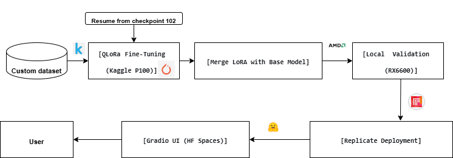

📌 The Problem
Most LLM tutorials stop after fine‑tuning on a notebook. This project bridges the gap between experimentation and production by delivering a complete, deployable system: from raw dataset to a public web app with a scalable GPU backend.
🛠️ Tech Stack
- Python – core logic
- PyTorch – model training & inference
- HuggingFace Transformers & PEFT – QLoRA fine‑tuning
- Gradio – interactive UI
- Replicate – GPU inference API
- HuggingFace Spaces – frontend hosting
- Kaggle P100 GPU – cloud training environment
🏗️ Architecture
Dataset → QLoRA Fine‑tuning (Kaggle P100) → Model Merge → Local Validation → Replicate Deployment → Gradio UI (Hugging Face Spaces)

⚙️ Key Engineering Challenges
- Cloud GPU adaptation: Local machine suspended at checkpoint 102, so migrated training to Kaggle P100 GPU – demonstrating ability to work with cloud environments and recover from interruptions.
- Memory optimization on P100: Fine‑tuned a 3B parameter model within the P100's 16GB memory using QLoRA (4‑bit quantization) and gradient checkpointing.
- Adapter merging: Integrated LoRA adapters back into the base model for seamless inference without external weights.
- Deployment integration: Connected a Gradio interface (Hugging Face Space) to a Replicate GPU endpoint, enabling scalable, serverless inference.
- Dataset preparation: Cleaned and formatted custom instruction data for supervised fine‑tuning.
🚀 Live Deployments
The Replicate endpoint has already processed 36+ inference runs – real usage, not just a demo.